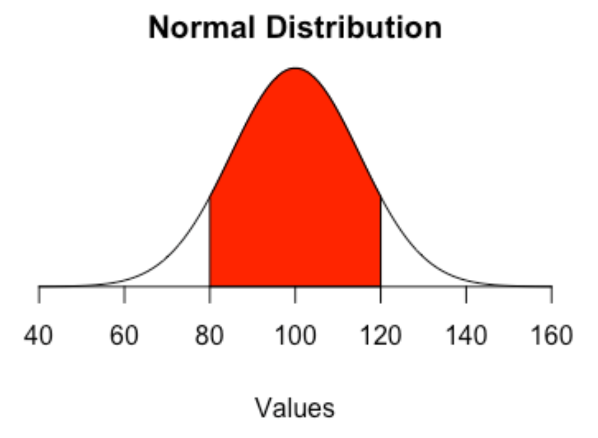

Chapter 12 Z-scores
Z-scores are a handy way to standardize numbers so you can compare things across groupings or time. In this class, we may want to compare teams by year, or era. We can use z-scores to answer questions like who was the greatest X of all time, because a z-score can put them in context to their era.
A z-score is a measure of how a particular stat is from the mean. It’s measured in standard deviations from that mean. A standard deviation is a measure of how much variation – how spread out – numbers are in a data set. What it means here, with regards to z-scores, is that zero is perfectly average. If it’s 1, it’s one standard deviation above the mean, and 34 percent of all cases are between 0 and 1.

If you think of the normal distribution, it means that 84.3 percent of all case are below that 1. If it were -1, it would mean the number is one standard deviation below the mean, and 84.3 percent of cases would be above that -1. So if you have numbers with z-scores of 3 or even 4, that means that number is waaaaaay above the mean.
So let’s use last year’s Nebraska basketball team, which if haven’t been paying attention to current events, was not good at basketball.
12.1 Calculating a Z score in R
For this we’ll need the logs of all college basketball games last season.
For this walkthrough:
Load the tidyverse.
library(tidyverse)And load the data.
gamelogs <- read_csv("data/logs20.csv")##
## ── Column specification ────────────────────────────────────────────────────────
## cols(
## .default = col_double(),
## Date = col_date(format = ""),
## HomeAway = col_character(),
## Opponent = col_character(),
## W_L = col_character(),
## Blank = col_logical(),
## Team = col_character(),
## Conference = col_character(),
## season = col_character()
## )
## ℹ Use `spec()` for the full column specifications.The first thing we need to do is select some fields we think represent team quality and a few things to help us keep things straight. So I’m going to pick shooting percentage, rebounding and the opponent version of the same two:
teamquality <- gamelogs %>%
select(Conference, Team, TeamFGPCT, TeamTotalRebounds, OpponentFGPCT, OpponentTotalRebounds)And since we have individual game data, we need to collapse this into one record for each team. We do that with … group by.
teamtotals <- teamquality %>%
group_by(Conference, Team) %>%
summarise(
FGAvg = mean(TeamFGPCT),
ReboundAvg = mean(TeamTotalRebounds),
OppFGAvg = mean(OpponentFGPCT),
OffRebAvg = mean(OpponentTotalRebounds)
) ## `summarise()` regrouping output by 'Conference' (override with `.groups` argument)To calculate a z-score in R, the easiest way is to use the scale function in base R. To use it, you use scale(FieldName, center=TRUE, scale=TRUE). The center and scale indicate if you want to subtract from the mean and if you want to divide by the standard deviation, respectively. We do.
When we have multiple z-scores, it’s pretty standard practice to add them together into a composite score. That’s what we’re doing at the end here with TotalZscore. Note: We have to invert OppZscore and OppRebZScore by multiplying it by a negative 1 because the lower someone’s opponent number is, the better.
teamzscore <- teamtotals %>%
mutate(
FGzscore = as.numeric(scale(FGAvg, center = TRUE, scale = TRUE)),
RebZscore = as.numeric(scale(ReboundAvg, center = TRUE, scale = TRUE)),
OppZscore = as.numeric(scale(OppFGAvg, center = TRUE, scale = TRUE)) * -1,
OppRebZScore = as.numeric(scale(OffRebAvg, center = TRUE, scale = TRUE)) * -1,
TotalZscore = FGzscore + RebZscore + OppZscore + OppRebZScore
) So now we have a dataframe called teamzscore that has 353 basketball teams with Z scores. What does it look like?
head(teamzscore)## # A tibble: 6 x 11
## # Groups: Conference [1]
## Conference Team FGAvg ReboundAvg OppFGAvg OffRebAvg FGzscore RebZscore
## <chr> <chr> <dbl> <dbl> <dbl> <dbl> <dbl> <dbl>
## 1 A-10 Davi… 0.454 31.1 0.437 30.4 0.505 -0.619
## 2 A-10 Dayt… 0.525 32.5 0.413 29.0 2.59 0.0352
## 3 A-10 Duqu… 0.444 32.4 0.427 32.4 0.216 -0.0168
## 4 A-10 Ford… 0.384 30.0 0.402 33.9 -1.53 -1.13
## 5 A-10 Geor… 0.424 33.8 0.440 30.5 -0.358 0.620
## 6 A-10 Geor… 0.422 30.5 0.452 32.7 -0.410 -0.904
## # … with 3 more variables: OppZscore <dbl>, OppRebZScore <dbl>,
## # TotalZscore <dbl>A way to read this – a team at zero is precisely average. The larger the positive number, the more exceptional they are. The larger the negative number, the more truly terrible they are.
So who are the best teams in the country?
teamzscore %>% arrange(desc(TotalZscore))## # A tibble: 353 x 11
## # Groups: Conference [32]
## Conference Team FGAvg ReboundAvg OppFGAvg OffRebAvg FGzscore RebZscore
## <chr> <chr> <dbl> <dbl> <dbl> <dbl> <dbl> <dbl>
## 1 Big West UC-I… 0.473 36.6 0.390 27.1 1.60 2.23
## 2 Big 12 Kans… 0.482 35.9 0.378 29.0 2.36 1.13
## 3 WCC Gonz… 0.517 37.4 0.424 28.2 1.73 1.90
## 4 Southland Step… 0.490 34.2 0.427 26.6 1.76 1.05
## 5 Big Ten Mich… 0.460 37.7 0.382 29.6 1.38 1.55
## 6 OVC Murr… 0.477 35.3 0.401 29.2 1.31 1.36
## 7 Summit Sout… 0.492 35.5 0.423 31.3 1.58 1.52
## 8 A-10 Dayt… 0.525 32.5 0.413 29.0 2.59 0.0352
## 9 A-10 Sain… 0.457 37.4 0.403 30.5 0.598 2.21
## 10 ACC Loui… 0.457 36.6 0.392 29.8 1.11 1.37
## # … with 343 more rows, and 3 more variables: OppZscore <dbl>,
## # OppRebZScore <dbl>, TotalZscore <dbl>Don’t sleep on the Anteaters! Would have been a tough out at the tournament that never happened.
But closer to home, how is Nebraska doing.
teamzscore %>%
filter(Conference == "Big Ten") %>%
arrange(desc(TotalZscore)) %>%
select(Team, TotalZscore)## Adding missing grouping variables: `Conference`## # A tibble: 14 x 3
## # Groups: Conference [1]
## Conference Team TotalZscore
## <chr> <chr> <dbl>
## 1 Big Ten Michigan State Spartans 5.36
## 2 Big Ten Rutgers Scarlet Knights 3.73
## 3 Big Ten Ohio State Buckeyes 1.99
## 4 Big Ten Illinois Fighting Illini 1.77
## 5 Big Ten Indiana Hoosiers 1.19
## 6 Big Ten Maryland Terrapins 0.544
## 7 Big Ten Michigan Wolverines 0.127
## 8 Big Ten Penn State Nittany Lions -0.182
## 9 Big Ten Minnesota Golden Gophers -0.196
## 10 Big Ten Iowa Hawkeyes -0.239
## 11 Big Ten Purdue Boilermakers -0.346
## 12 Big Ten Wisconsin Badgers -1.88
## 13 Big Ten Northwestern Wildcats -4.22
## 14 Big Ten Nebraska Cornhuskers -7.64So, as we can see, with our composite Z Score, Nebraska is … not good. Not good at all.
12.2 Writing about z-scores
The great thing about z-scores is that they make it very easy for you, the sports analyst, to create your own measures of who is better than who. The downside: Only a small handful of sports fans know what the hell a z-score is.
As such, you should try as hard as you can to avoid writing about them.
If the word z-score appears in your story or in a chart, you need to explain what it is. “The ranking uses a statistical measure of the distance from the mean called a z-score” is a good way to go about it. You don’t need a full stats textbook definition, just a quick explanation. And keep it simple.
Never use z-score in a headline. Write around it. Away from it. Z-score in a headline is attention repellent. You won’t get anyone to look at it. So “Tottenham tops in z-score” bad, “Tottenham tops in the Premiere League” good.